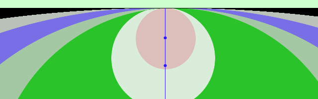
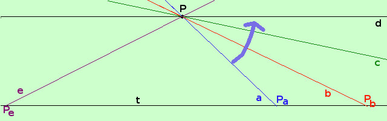
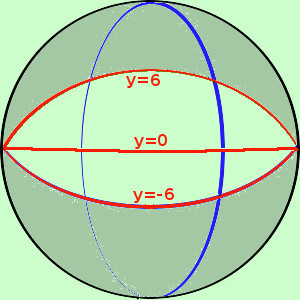

Perche' l'intorno di infinito (senza segno) e' fatto da due strisce, una verso l'alto ed una verso il basso
La cosa deriva da due fatti
- La retta puo' essere considerata come una circonferenza di raggio infinito

Se prendo l'insieme delle circonferenze passanti per un punto e, tenendo fisso il punto ne aumento il raggio ottengo la figura qui sopra:
la circonferenza che corrisponde al cerchio nero ha il raggio infinito e coincide con la retta tangente a tutte le circonferenze
- ∞ puo' essere considerato un punto su una retta

Considero la retta t ed il punto P esterno ad essa
Dal punto P posso tracciare delle rette come a che taglia t in Pa, se faccio ruotare la retta aotterro' ad esempio b che taglia t in Pb;
Continuando a ruotare vedo che il punto di intersezione si allontana verso destra finche' la retta diventa parallela ed il punto sparisce; ma basta che io ruoti ancora leggermete la retta parallela perche' il punto di intersezione ricompaia a sinistra: continuando a ruotare otterro' la retta e che taglia t in Pe
per questo motivo si dice che due rette parallele hanno in comune un punto all'infinito, e chiamero' tale punto ∞
Ne segue che ogni retta possiede un punto all'infinito


Da questi due fatti, per analogia con quanto fatto sulla retta, segue che, se considero un piano, esso puo' essere considerato come una superficie sferica di raggio infinito e le rette possono essere considerate come dei meridiani
Allora, quando considero un intorno di infinito ottengo tutta le sfera meno un fuso (la superficie di uno spicchio).
L'intorno di infinito nell'ultimo esempio della pagina precedente, qui riprodotto a sinistra e' la zona colorata in grigio nella figura di destra
|